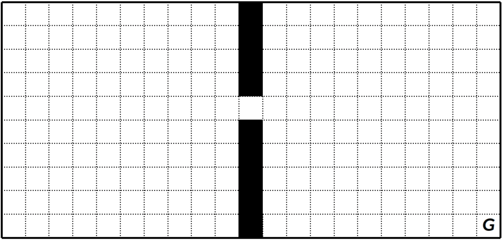
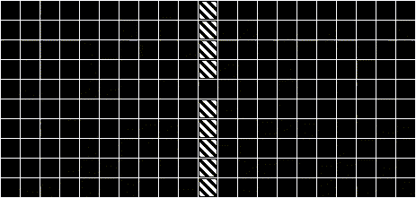
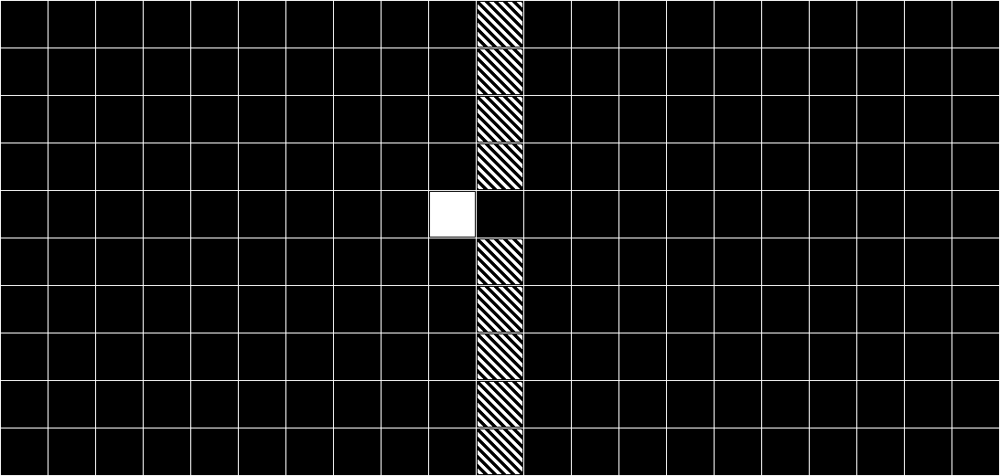
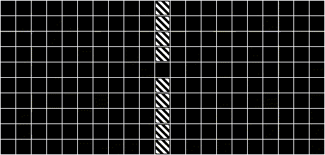
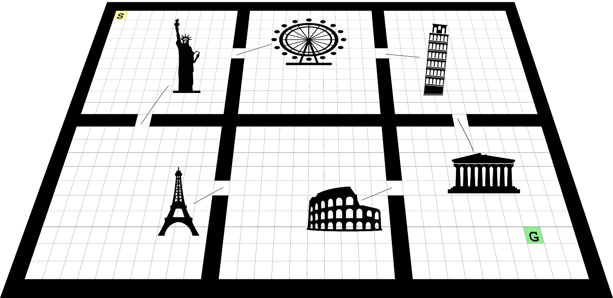

Research Focus
My main research is focused on the improvement of a Reinforcement Learning (RL) by a convenient decomposition of the problem. In its easiest case, we assume that the RL agent has complete information about its state. In other words, the problem becomes fully observable by the agent. Subgoal Identification is useful for the agent which tries to learn the fully observable environment to decompose and achieve some tasks efficiently.
The difference between classical Q Learning and Macro-Q Learning with dynamic subgoal identification is obvious in the two animations below, prepared by Alper Demir.
You can see the classical 2 rooms with 1 door grid domain in the following figure. The agent starts each episode in a random cell in the left room and tries to reach the bottom right corner of the right room.
For Q Learning without subgoal identification this is the trace of agent history for 100th episode in this domain:
When the agent detects a subgoal close to the doorway (the cell colored with white) in this domain like the figure below:
Then the agent generates an option to reach that state and the trace of agent history for 100th episode in this domain becomes more goal oriented as can be seen in the animation below:
The efficency in learning which agent gains with the dynamic identification of subgoal is significant.
When the agent is not able to completely perceive its current status, then the problem becomes partially observable for the agent. For example, under partial observability, the agent cannot sense its exact location in the domain above. It can only get a clue to its whereabout which can make the problem and its decomposition severely challenging. What the agent needs at this point is an external memory or a special set of observations that it can rely.
In the 6 rooms domain above, the task is going from the location indicated by the letter S to the location indicated by letter G. The doors are assumed to yield unique observations as landmarks in this domain. Therefore, they can be useful in the decomposition of the problem which can be very ambiguous as a whole.